更新日 : 2017/05/07
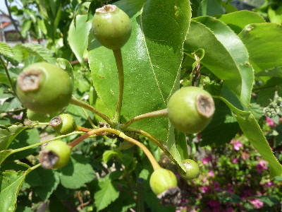
受粉がいいタイミングで出来たようで、実がいっぱい出来ました。
最終的に何個出来るかな。楽しみだな。
更新日 : 2017/08/26
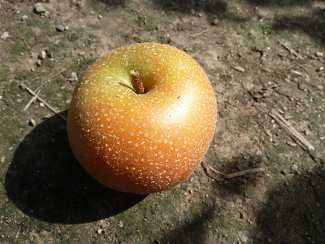
始めて家庭で梨の収獲が出来ました。
梨が小さいのでまだかなとも思いましたが、いい色になっているので収穫しました。
食べてみたら美味しかったので、家の梨はたぶん小さい種類か、あまり大きくならないんでしょう。
来年も実ができたら、同じ時期に収穫しようと思います。
更新日 : 2018/07/01
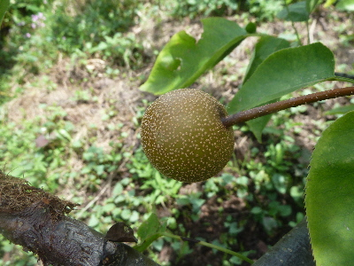
今年は開花のタイミングが悪かったので、実がないと思っていました。
よく見たらちょっとありました。袋かけして、大事に育てようと思います。
更新日 : 2020/07/04
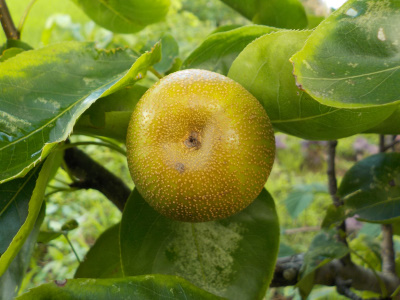
梨の実が出来ていました。
今年は開花のタイミングが悪かったので諦めていたんですが、少し実が出来ていました。
袋掛けをして大切に育てようと思います。
更新日 : 2020/07/26
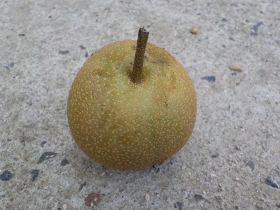
梨の実が落ちていました。
小さくて硬いですが、見た目綺麗なので食べても大丈夫かな？と思い試食しました。
苦くて渋くて不味いかと思ったんですが、薄い味でした。ちょっとつまらない味でした。
更新日 : 2020/09/06
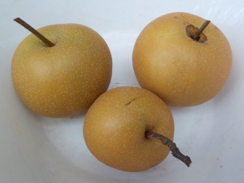
たぶん食べごろだと思うので、台風で落ちる前に収穫しました。
今年の収穫は3個です。甘くて美味しかった。
もっと沢山収穫したいですね。
更新日 : 2021/08/18
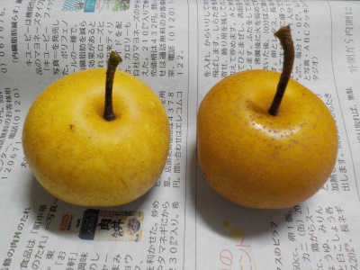
今年も小さな梨が出来ました。
両方共、甘さが少なかったです。肥料が少なかったのかな。
更新日 : 2021/08/21
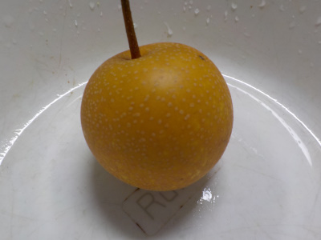
1週間前のよりちょっと甘かったかな。
ネットに、天気が続いた時は水やりすると実が大きくなるって記事がありました。
梨は水道の近くに植えていないので、水やりは出来ないかなー。
更新日 : 2022/10/23
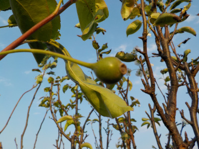
春には実が付かなかった梨に、実が出来ていました。
あー感じ悪い。なんで今頃出来てるんだろう。秋なのに花もいっぱい咲いてるから、来年の春は花の数が少そうです。
うまくいかないです。
更新日 : 2023/05/05
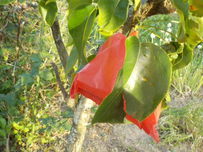
今年は受粉がうまく行ったようで、小さい実が沢山出来ました。
でも袋の在庫が少ししか残っていなかったので、ちょっとしか袋掛け出来ませんでした。
続きはまた今度です。
更新日 : 2023/06/24
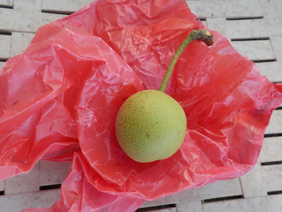
梨の枝って真っ直ぐ上に伸びるものが多いです。
高い場所の作業はしたくないので剪定で低くしてたんですが、間違って実がついてる枝を切ってしまいました。残念。
あんまり考えると悲しいので忘れよう。
更新日 : 2023/08/10
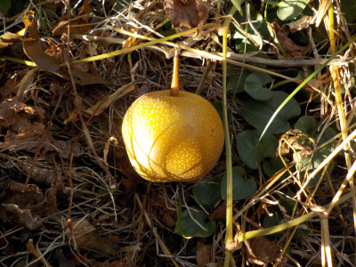
梨を一つ食べてみたら美味しくなっていました。
残りもお盆中に食べようと思います。
沢山収穫が出来ないのは、何かが間違っているんでしょうね。
【おいしいものを食べよう。】【たくさん寝よう。】
【ソロ活をしよう!】【季節感のあることをしよう。】【動画視聴はほどほどに。】【当サイトの全てのコンテンツは無断転載禁止です。】